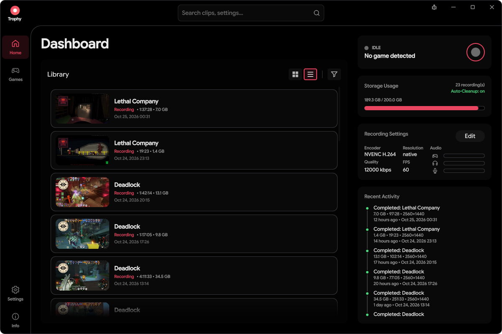
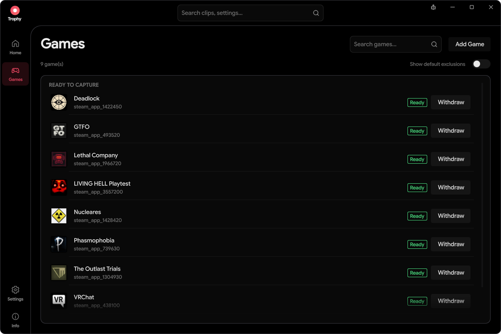
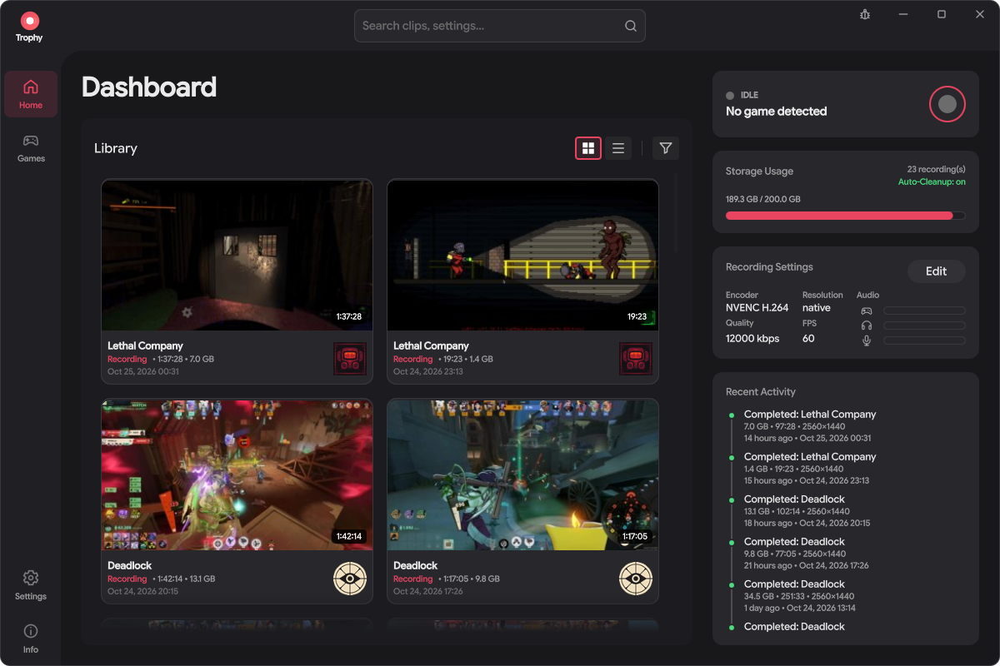
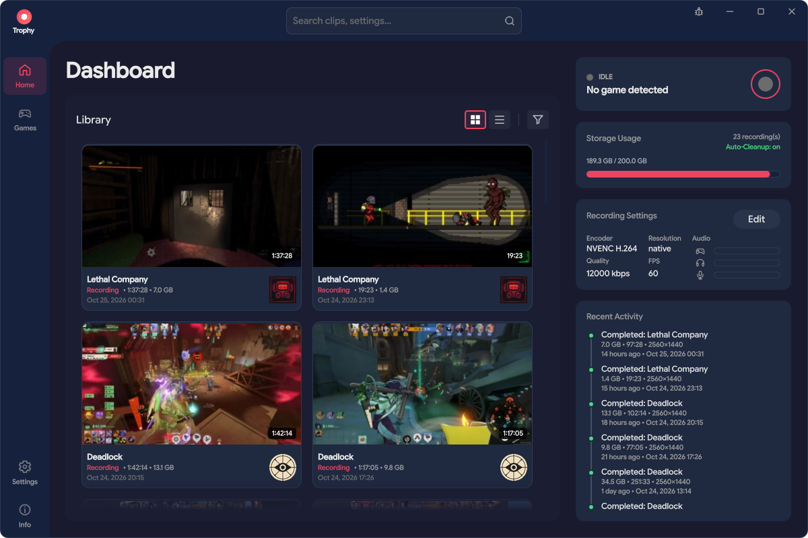

Record your way.
Save recent gameplay from the replay buffer, or keep the whole session.
Trophy is a free, open-source game recorder and clipping app for Linux on Wayland.
Latest release: v0.9.6View release notes
Free & open source · Linux / Wayland · No account needed, entirely local
RECORD HOW YOU WANT
Save recent gameplay from the replay buffer, or keep the whole session.
Capture game, voice chat, and mic separately, or bring them together.
Bookmark a moment, jump back to it, and snip a clip worth keeping.
Export a share-ready MP4 with the audio you want. Your original stays untouched.
Recording toggleStart a full recording. Press again to stop and save.
Clip / BookmarkSave a replay when the buffer is ready, or bookmark an active recording.
Choose bindings through the Global Shortcuts portal, or use native desktop bindings where it isn’t available.
THE BUILT-IN PLAYER
Add bookmarks during or after recording, then jump straight to them.
Zoom, pan, and loop before snipping. Cuts align to a nearby video keyframe.
Mute individual audio tracks or save a still-frame snapshot.
KEEP THE BEST. SKIP THE CLUTTER.

Share exports produce whole-file H.264/AAC MP4 copies. Snip a shorter clip first; originals stay untouched.
SET IT UP. GET BACK TO PLAYING.
Capture goes through your desktop’s screen-sharing portal. Authorize your games, manage them in one place, and withdraw saved approval when you want.
Choose automatic full-session recording for detected, authorized games, or keep a replay buffer ready for the moments you want to save.
Trophy is privacy conscious and cannot see or record your screen without your explicit permission per app.
Explore the user guide
Set your replay length and save recent gameplay when the buffer is ready—without keeping an entire session.
Use the system tray for quick access, configure close-to-tray behavior, and optionally launch Trophy at login.
Choose a storage limit and enable automatic cleanup of eligible older captures. Protected favorites stay out of that cleanup.
SAME TROPHY. YOUR VIBE.
True black. Crisp accents.

Soft, neutral grays.

Our old original theme, deep navy.
Pick your accent.
All seven work with every theme.Change your theme and accent color anytime in Settings.
LINUX FIRST, WAYLAND ONLY.
A Wayland session, PipeWire, and a compatible screen-sharing portal. Capture Wayland and XWayland games; X11 desktop sessions aren’t supported.
NVIDIA NVENC, AMD/Intel VA-API, or software H.264. Available codecs and GPU capture paths depend on your hardware and drivers.
Window integrations for KDE, GNOME, Hyprland, and Sway. The setup guide covers the steps for your desktop.
Daily release checks with one-click downloads, plus automatic installs on AppImage.
Check your setup. Compatibility varies by compositor and driver. KDE/NVIDIA has live capture verification; other desktops and VA-API paths still need broader real-world testing.
Requirements & compatibilityGETTING STARTED
Download a release and its checksums. For the AppImage, make it executable and launch it.
Download AppImageChoose your folder, audio, and two shortcuts in the wizard. Install the desktop helper when prompted; game-detection reporters are optional.
Authorize capture through your desktop’s portal, then record a session or save recent gameplay with the replay buffer.
Yes. Trophy is 100% free and open-source software licensed under the GNU GPL v3. No subscription or account is required. You can browse the source, report issues, or contribute on GitHub.
No. Your recordings, clips, and exported copies stay on your computer. Sharing creates a local file for you to upload or send yourself; Trophy does not upload your gameplay.
Trophy can capture native Wayland and XWayland games, including games running through Proton, in a Wayland desktop session. Automatic detection depends on the game, runtime, and desktop integration. See the game-detection guide and the anti-cheat cautions below.
Anti-cheat compatibility is not guaranteed. The optional Vulkan and OpenGL game-detection reporters are opt-in; leave them off for protected games unless the game’s policy permits them. The OpenGL reporter uses session-wide preload configuration and needs a fresh login environment after changes. Read the reporter guidance before enabling either.
Recording uses system resources. Hardware encoding can reduce CPU work, but the impact depends on your resolution, recording frame rate, GPU, drivers, and capture path. There is no universal zero-impact guarantee; try your preferred settings in a game and lower the capture resolution or frame rate if needed.
Trophy records Game audio, Voice chat app audio and Microphone audio. When an application-specific audio source is unavailable, Trophy deliberately falls back to the overall desktop mix. That can include other apps.
Trophy records to crash-resilient MKV. Share exports create separate H.264/AAC MP4 copies using software encoding for easy sharing and broad compatibility. HDR-to-SDR conversion is currently not supported.
A full recording keeps the session from when you start recording until you stop. The replay buffer temporarily keeps recent gameplay so you can save a clip after something happens, without retaining the whole session. Replay capture must already be running and have enough recorded history to save the moment.
During a full recording, the Clip / Bookmark shortcut marks the current moment so you can find it later in the player. When no full recording is active, it saves recent gameplay from the replay buffer if the buffer is ready. This is one of Trophy’s two customizable shortcuts; the other starts or stops a full recording.
Only if you enable automatic cleanup in Settings. It removes older eligible captures to enforce your storage limit, skipping protected favorites and files currently reserved by recording, export, or editing work. Protection does not prevent explicit deletion. Manual deletions offer a 10-second Undo window; automatic cleanup is permanent and has no Undo. Read the storage guidance before enabling cleanup.
Yes. When no game is tracked, start a manual recording to open your desktop’s capture picker and select the source to share. When a game is already tracked, the Record action targets that game. Capture still requires your portal authorization.
If close-to-tray is enabled, closing the window hides Trophy rather than quitting, so an active recording can continue. Closing follows your configured close policy and any active-recording confirmation. Use the tray’s Quit action when you want to exit completely. See appearance and closing for details.
Download a release, launch Trophy, and follow the setup wizard for your recording folder, desktop helper, audio, and shortcuts. Capture requires portal authorization. The getting-started guide covers installation, checksum verification, and troubleshooting.
MORE WAYS TO GET TROPHY
Prefer a native package, a portable archive, or building it yourself?
All releases & notes · Checksums · x86_64 · Wayland required